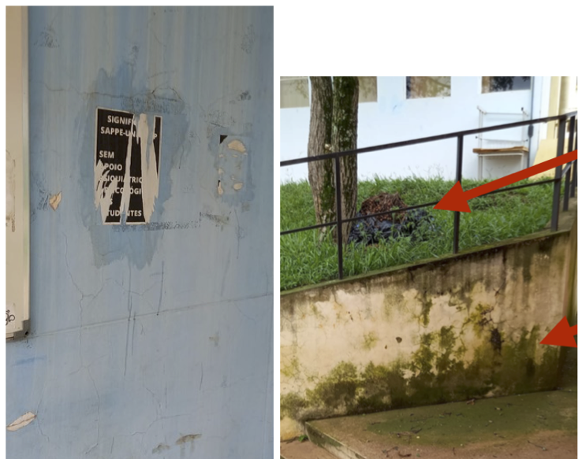
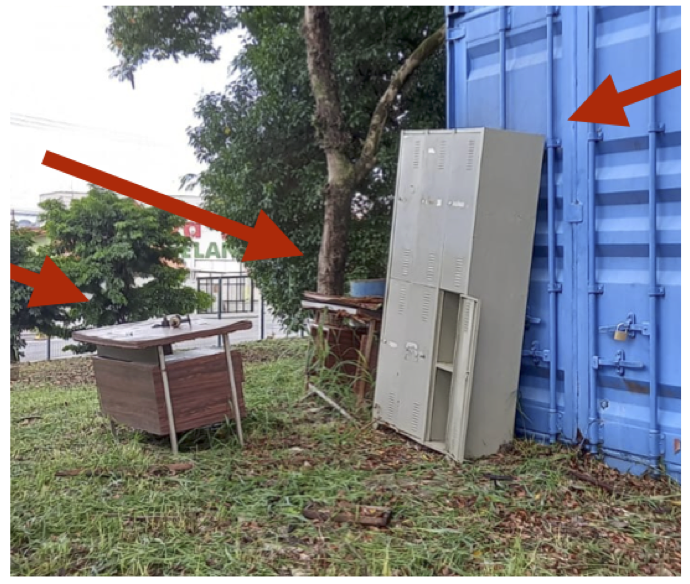
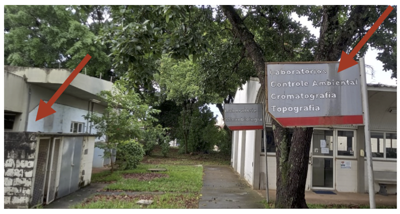
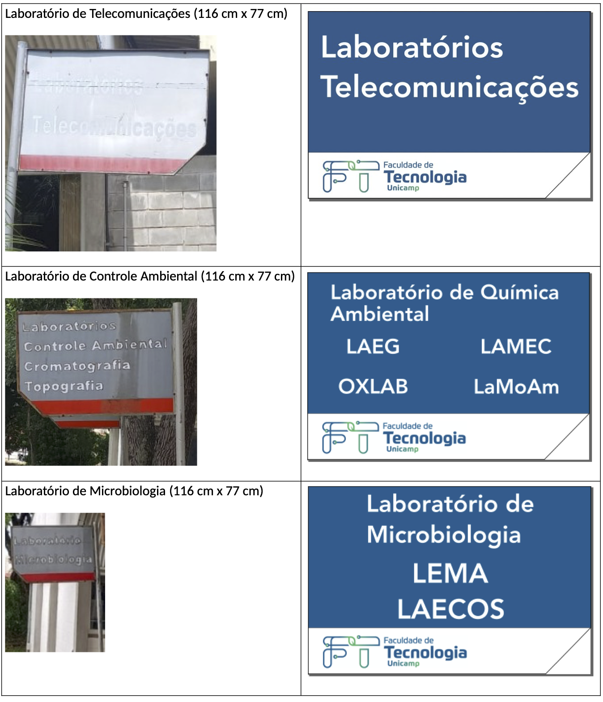

8 Recomendações
Durante a execução do FT de Portas Abertas, diversos pontos foram percebidos que poderiam ser levados em conta para a melhoria das edições futuras. A seguir, listamos esses pontos.
8.1 Comissão Permanente
A comissão organizadora foi instituída em 16/12/2024 e a primeira reunião ocorreu no dia 6/01/2025. Dada a importância do evento para a própria FT, vimos a necessidade de mais tempo para a organização. Parte disso se deve ao fato de ser o primeiro evento desse tipo na FT, o que requereu aprender muitos processos, tomando muito tempo da comissão. Uma sugestão seria instituir uma comissão permanente que poderia trabalhar ao longo do ano para o planejamento e divulgação do evento.
8.2 Composição da comissão organizadora
A participação dos alunos foi essencial para o sucesso do FT de Portas Abertas. A inclusão de alunos na comissão organizadora iria facilitar a comunicação e planejamento das atividades com a equipe de suporte (monitores).
8.3 Divisão de tarefas na comissão
As tarefas ficaram muito concentradas para o presidente da comissão. A sugestão para o próximo presidente, para o próprio bem dele, seria dividir a equipe em grupos para atividades específicas como, por exemplo, (a) compras/contratação, (b) divulgação nas escolas, (c) página e mídias sociais, (d) logística e (e) atrações.
8.4 Convênio com prefeitura de Limeira
A ausência de escolas públicas de Limeira no evento trouxe um alerta. Apesar de esforços na divulgação via email e presencial em algumas escolas, uma maior participação poderá ser alcançada estabelecendo-se um convênio com a Prefeitura de Limeira. Isso deve ser feita com antecedência já que trâmites nesse sentido podem demorar. Uma outra ação complementar seria contratar ônibus para trazer os estudantes de algumas escolas de Limeira para o evento. Recursos da curricularização da extensão poderiam ser usados para este fim.
8.5 Parceria com o Cotil
Apesar da divulgação do evento para a diretoria acadêmica do Cotil, a participação ocorreu apenas com uma turma de alunos, trazida por iniciativa individual de um professor. Realizar a divugação do FT de Portas abertas junto ao Cotil deve ser uma prioridade para a próxima comissão organizadora.
8.6 Horário das atrações
As dinâmicas de cada curso junto e as outras atividades do evento proporcionaram boas atrações para os visitantes. Definir horários para essas atrações e divulgá-los no site do evento irá facilitar a organização da logística do evento. Estabelecer os horários de início das trilhas ajudará as escolas a organizarem suas vindas para aproveitarem melhor o evento. Uma trilha de aproximadamente 2h por período permitirá uma melhor circulação pelo campus. Além disso, iniciar a trilha às 10h e 14h permite que um número suficiente de visitantes esteja presente para a trilha. Além da trilha das dinâmicas, é importar definir atividades para a visitação livre, caso o visitante não chegue a tempo do início da trilha. A visitação livre deve ser possível em qualquer período e é importante principalmente para famílias ou grupos melhores que chegam aleatoriamente ao longo do dia. Nessa definição de atrações, é importante também estabelecer e informar o horário de almoço para a equipe de monitores.
8.7 Logística
O processo de levar os grupos para as dinâmicas foi o mais estressante, uma vez que lidávamos com a incerteza da quantidade de alunos e o momento que chegariam para o evento. Estabelecer horários fixos para o início das trilhas pode ajudar. Ter parte da equipe de logística para atender grupos atrasados para as trilhas pode melhorar a circulação. Adaptar o aplicativo do evento para auxiliar na logística poderá fornecer uma ferramenta de organização.
8.8 Aumento das atrações
A visita nos laborórios de pesquisa e de extenão pode ser mais explorada. Isso proporciona mais opções para o visitante ao mesmo tempo que ajuda divulgar ainda mais as atividades desenvolvidas na FT. A apresentação dos laboratórios pode ser feita com a ajuda de pós-graduandos e de bolsistas de iniciação científica.
8.9 Documentação financeira
O pagamento de diárias para os monitores exigiu um aprendizado do setor financeiro da FT, dado o número grande de pedidos simultâneos. Para o processo de pagamento, eram necessários os seguintes documentos (em formato PDF): (a) planilha com as informações (Nome completo; CPF; Número de matrícula; Dados bancários; Valores); (b) prospecto do evento; (c) atestado de matrícula emitido pela DAC, referente ao período letivo em curso; (d) comprovante de endereço (pode ser utilizada a declaração firmada pelo próprio interessado, nos termos da Lei Federal nº 7.115/83); (e) informação do interessado indicando o banco, agência e nº da conta corrente em que será creditado o pagamento.
Percebemos que o processo de envio de documentos foi facilitado criando-se um Google Forms para obter as informações para (a), o atestado de matrícula e o comprovante de endereço. Como comprovante de endereço vimos que é mais fácil os alunos enviarem um documento com o seguinte conteúdo, assinado digitalmente:
DECLARAÇÃO DE RESIDÊNCIA
Eu,__________________________________________________________ _________________, CPF nº _________________________ RG nº __________________ Órgão Exped. ____________, telefone (_____)___________________, na falta de documentos para comprovação de residência, em conformidade com o disposto na Lei 7.115, de 29 de agosto de 1983, DECLARO para os devidos fins, sob penas da Lei, ser residente e domiciliado no endereço ____________________________________________ _________________________________________________________________________. Por ser verdade, firmo a presente declaração para que produza os efeitos legais, ciente de que a falsidade de seu conteúdo pode implicar na imputação de sanções civis, administrativas, bem como na sanção penal prevista no art. 299 do Código Penal, conforme transcrição abaixo:
“Art. 299 – Omitir, em documento público ou particular, declaração que nele deveria constar, ou nele inserir ou fazer inserir declaração falsa ou diversa da que devia ser escrita, com o fim de prejudicar direito, criar obrigação ou alterar a verdade sobre o fato juridicamente relevante. Pena: reclusão de 1 (um) a 5 (cinco) anos e multa, se o documento é público e reclusão de 1 (um) a 3 (três) anos, se o documento é particular”
_____________________________, _________/_________/__________.
Local Data
_____________________.
Assinatura do Declarante _________________________________________
O endereço informado deve ser o mesmo cadastrado na DAC.
Para a informação bancária do aluno, a forma mais eficiente foi por meio do envio, pelo aluno, para o setor financeiro de um email com o seguinte conteúdo:
Esses são os dados da minha conta:
Banco:__________________.
Agência: _________________.
Conta: _________________.
Nome do aluno
Finalmente, os documentos (c), (d) e (e) devem ser agrupados num único arquivo PDF para facilitar a inserção no sistema de pagamento da Unicamp.
8.10 Melhorias no campus
A constante melhoria do campus, seja ela para a visitação da comunidade externa, seja ela para o uso da comunidade de interna, deve ser sempre buscado pela Diretoria da FT e pela prefeitura do campus. Durante a organização do FT de Portas Abertas, apontamos vários pontos do campus que poderiam ser melhorados. Exemplos de 3 desses pontos são mostrados a seguir.



Em relação às placas informativas, a comissão elaborou novos designs para elas e apresentou-os para a prefeitura do campus. No entanto, as modificações não foram realizadas.

8.11 Ampliação da participação da comunidade interna
A FT de Portas Abertas beneficia a própria FT. Ações para aumentar a adesão da comunidade interna devem ser implantadas para expandir o número de atrações no evento e aproximar a FT da comunidade externa. Por exemplo, a participação de laboratórios de pesquisa foi pequena no evento. Visitas nos laboratórios ou mesmo pequenos estandes para expor parte da pesquisa feita poderiam despertar interesse dos visitantes.